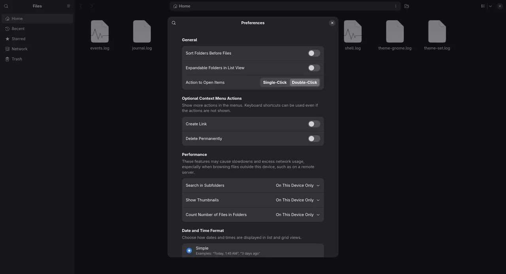

<style>
/* /uses: the why page. One section per kind of work, each the same shape: what you ask, what the
   agent does in its box, what you get (the story, on the left), then a picture and the two or three
   commands under it (on the right). */
.uidx { display: flex; flex-wrap: wrap; gap: 8px; margin-top: 36px; }
.uidx a { display: inline-flex; align-items: center; gap: 8px; padding: 9px 14px; border-radius: 999px; border: 1px solid var(--line-2); background: var(--s1); color: var(--ink-2); text-decoration: none; font: 500 12px/1 var(--mono); letter-spacing: .08em; text-transform: uppercase; transition: border-color .2s, color .2s; }
.uidx a:hover { border-color: rgb(158 206 106 / .5); color: var(--ink); }

/* one use: the story on the left, the picture and the commands on the right */
.use { display: grid; grid-template-columns: minmax(0, 1fr); gap: 18px; }
@media (min-width: 900px) { .use { grid-template-columns: minmax(0, .92fr) minmax(0, 1.08fr); gap: 28px; align-items: start; } }
.use > div { display: grid; gap: 14px; min-width: 0; }
.flow { list-style: none; margin: 0; padding: 0; display: grid; gap: 12px; }
.flow li { position: relative; border-radius: 16px; border: 1px solid var(--line-2); background: var(--s1); padding: 16px 18px; display: grid; gap: 8px; box-shadow: 0 24px 50px -28px rgb(0 0 0 / .8); }
.flow li + li::before { content: ""; position: absolute; left: 28px; top: -13px; width: 2px; height: 12px; background: var(--line-2); }
.flow p { color: var(--ink-2); font-size: 15.5px; }
.flow p b { color: var(--ink); font-weight: 600; }
.flow .ask { border-color: rgb(125 207 255 / .35); background: rgb(125 207 255 / .05); }
.flow .ask p:last-child { font: 600 18px/1.35 var(--display); color: var(--ink); letter-spacing: .005em; }
.flow .box { border-color: rgb(158 206 106 / .4); background: rgb(158 206 106 / .04); }
.who { font: 500 11.5px/1.4 var(--mono); letter-spacing: .12em; text-transform: uppercase; color: var(--muted); }
.ask .who { color: var(--sky); } .box .who { color: var(--box); }
.code .c { color: var(--muted); font-style: italic; }
.use figure { margin: 0; }
.use figure img, .use figure video { display: block; width: 100%; height: auto; border-radius: 10px; border: 1px solid var(--line); background: var(--well); }

/* the media section's smaller uses */
.mini { display: grid; gap: 14px; grid-template-columns: minmax(0, 1fr); margin-top: 14px; }
@media (min-width: 860px) { .mini { grid-template-columns: repeat(2, minmax(0, 1fr)); } }
.mini .card > .in { gap: 10px; }
.mini h3 { font-size: 17px; }

/* the pictures: CSS scenes, transform and opacity only, paused off screen */
.pic { position: relative; height: 200px; border-radius: 12px; border: 1px solid var(--line-2); background: var(--well); overflow: hidden; }
.pic .bx2 { position: absolute; border-radius: 6px; border: 1.5px solid rgb(158 206 106 / .7); background: radial-gradient(120% 90% at 20% 0%, #15240f, #090c08 70%); }
.pic .lbl { position: absolute; font: 500 10.5px/1.5 var(--mono); color: var(--box); white-space: nowrap; }
.pic .lbl.m { color: var(--muted); } .pic .lbl.w { color: var(--warn); }
/* a contact sheet of a canvas: the square moves, one frame flickers */
.pic .sheet { position: absolute; left: 14px; right: 14px; top: 34px; bottom: 34px; display: grid; grid-template-columns: repeat(6, minmax(0, 1fr)); gap: 6px; }
.pic .sheet span { position: relative; border-radius: 4px; border: 1px solid rgb(158 206 106 / .35); background: #0f170c; overflow: hidden; }
.pic .sheet span::after { content: ""; position: absolute; top: 42%; left: var(--x); width: 16%; aspect-ratio: 1; border-radius: 2px; background: var(--sky); }
.pic .sheet span.bad { border-color: var(--warn); background: #fff; }
.pic .sheet span.bad::after { opacity: 0; }
/* themes: a bar per theme, one too faint */
.pic .bars { position: absolute; left: 14px; right: 14px; top: 14px; bottom: 40px; display: grid; gap: 7px; }
.pic .bars div { border-radius: 6px; border: 1px solid var(--line-2); display: flex; align-items: center; gap: 8px; padding: 0 10px; font: 500 10.5px/1 var(--mono); }
.pic .bars i { width: 9px; height: 9px; border-radius: 50%; }
.pic .bars em { margin-left: auto; font-style: normal; }
/* your desk and its copy */
.pic .dk { position: absolute; top: 16px; bottom: 40px; border-radius: 6px; border: 1.5px solid var(--line-2); background: #10111a; overflow: hidden; }
.pic .dk.bx2 { border-color: rgb(158 206 106 / .7); }
.pic .dk .sb { position: absolute; left: 0; top: 0; bottom: 0; width: 14%; background: rgb(122 162 247 / .18); }
.pic .dk .tb { position: absolute; left: 0; right: 0; top: 0; height: 9px; background: rgb(122 162 247 / .18); }
.pic .dk .wn { position: absolute; border-radius: 3px; border: 1px solid var(--line-2); background: #1a1d2e; }
.pic .dk.bx2 .sb { background: rgb(158 206 106 / .3); animation: slide 4s ease-in-out infinite alternate; }
.pic .dk.bx2 .tb { animation: fade 4s ease-in-out infinite alternate; }
@keyframes slide { from { opacity: 0; transform: translateX(-100%); } 40% { opacity: 1; transform: none; } to { opacity: 1; transform: none; } }
@keyframes fade { from { opacity: 1; } 40%, to { opacity: 0; } }
/* monitors dropping */
.pic .mon { position: absolute; border-radius: 4px; border: 1.5px solid rgb(158 206 106 / .7); background: #0f170c; }
.pic .mon::before { content: ""; position: absolute; inset: 0 0 auto; height: 5px; background: rgb(158 206 106 / .3); }
.pic .mon.blink { animation: gone 2.4s steps(1) infinite; }
@keyframes gone { 50% { opacity: .15; } }
.pic .bt2 { position: absolute; left: 14px; right: 14px; font: 400 11px/1.6 var(--mono); color: var(--ink-2); white-space: pre; }
.pic .bt2 .w { color: var(--warn); }
/* three branches, three boxes */
.pic .lane { position: absolute; left: 14px; right: 14px; height: 44px; display: flex; align-items: center; gap: 10px; font: 500 10.5px/1 var(--mono); color: var(--ink-2); }
.pic .lane .bx2 { position: relative; flex: 1; height: 100%; display: flex; align-items: center; padding: 0 10px; color: var(--box); }
.pic .lane .bx2::after { content: ""; position: absolute; right: 10px; width: 34%; height: 8px; border-radius: 3px; background: rgb(158 206 106 / .4); transform-origin: left; animation: work 3s ease-in-out infinite alternate; }
@keyframes work { from { transform: scaleX(.2); } to { transform: scaleX(1); } }
.pic .lane > span:first-child { width: 30%; white-space: nowrap; overflow: hidden; text-overflow: ellipsis; }
</style>
<main class="wrap">
  <section class="page">
    <div class="head">
      <p class="tag">Use cases</p>
      <h1>A screen for every kind of thing <i>your agent builds.</i></h1>
      <p class="lead">omabox started as a way to test desktop apps without losing your desktop. Agents use it for more now:
        anything that needs a screen and shouldn't touch yours.</p>
      <p class="lead">Each use below is the same story. <b>What you ask</b>, <b>what the agent does in its box</b>,
        <b>what you get</b>, then the commands it runs, for when you want to type them yourself.</p>
    </div>
    <nav class="uidx" aria-label="Uses on this page">
      <a href="#apps">Desktop apps</a>
      <a href="#web">Web apps and games</a>
      <a href="#shells">Shells, plugins, themes</a>
      <a href="#desk">Your own desktop</a>
      <a href="#media">Demos and shots</a>
      <a href="#crash">Hard bugs</a>
      <a href="#parallel">Several at once</a>
    </nav>

    <div class="grp" id="apps" data-rail="Desktop apps">
      <p class="tag">Desktop apps</p>
      <h2>Your app, built <i>and clicked through.</i></h2>
      <p class="lead">GTK, Qt, Tauri, Electron or a TUI. An agent that can see its window gets the UI right; one that can't
        says "done" when it compiled.</p>
      <div class="use">
        <div>
          <ol class="flow">
            <li class="ask"><p class="who">You ask</p><p>“Add the settings dialog and make sure it works.”</p></li>
            <li class="box"><p class="who">In the box</p><p>It builds, opens the app with <code>look app</code> and gets back
              its window's shot and any error it printed. It clicks through with <code>keys</code> and <code>click</code>,
              reads the result as text with <code>tree</code>, fixes, and looks again. The tests that need a session (tray,
              notifications, D-Bus, a keyring) run in a box that comes and goes with the run.</p></li>
            <li><p class="who">You get</p><p>A shot of the finished dialog and green tests. <b>Your desktop never saw a
              window.</b></p></li>
          </ol>
        </div>
        <div>
          <figure>
            <figcaption class="caption">One <code>look app</code>: a throwaway box, the app, a shortcut sent, its window
              shot, nothing left up.</figcaption></figure>
          <pre class="code"><span class="p">$</span> omabox look app --keys "ctrl+comma" -- ./build/app
<span class="p">$</span> omabox tree --find "Dark mode" --window app   <span class="c"># text, not a shot</span>
<span class="p">$</span> omabox run -- ctest --test-dir build --output-on-failure</pre>
        </div>
      </div>
    </div>

    <div class="grp" id="web" data-rail="Web apps and games">
      <p class="tag">Web apps and games</p>
      <h2>A real browser, <i>with real frames.</i></h2>
      <p class="lead">A headless browser runs a page's animation loop only two or three times a run, so a game or a canvas
        never really moves. In a box, Chromium draws every frame on a screen nobody sees.</p>
      <div class="use">
        <div>
          <ol class="flow">
            <li class="ask"><p class="who">You ask</p><p>“The canvas flickers when I resize. Find out why.”</p></li>
            <li class="box"><p class="who">In the box</p><p><code>look page</code> opens it in Chromium, holds keys over
              many frames, takes a row of shots into one contact sheet, and reports the page's uncaught exceptions and
              failed loads. It narrows the window to a phone's width with <code>mode</code>.</p></li>
            <li><p class="who">You get</p><p>The frames where it flickers, the exception behind it, and the fix. No browser
              window on your screen.</p></li>
          </ol>
        </div>
        <div>
          <div class="pic" aria-hidden="true"><span class="lbl" style="left:14px;top:12px">sheet: 6 shots over 2s</span><div class="sheet"><span style="--x:8%"></span><span style="--x:22%"></span><span style="--x:36%"></span><span class="bad"></span><span style="--x:64%"></span><span style="--x:78%"></span></div><span class="lbl w" style="left:14px;bottom:12px">Uncaught TypeError: ctx is null (game.js:88)</span></div>
          <pre class="code"><span class="p">$</span> omabox look page http://127.0.0.1:5173
<span class="p">$</span> omabox look page game.html --hold Right 2s --shots 6
<span class="p">$</span> omabox mode 412x915                        <span class="c"># phone width</span></pre>
          <p class="caption">From the box, reach your dev server at <code>127.0.0.1</code>, not localhost.
            <code>--net isolated --allow 5173</code> keeps the box to that one port.</p>
        </div>
      </div>
    </div>

    <div class="grp" id="shells" data-rail="Shells, plugins, themes">
      <p class="tag">Shells, plugins and themes</p>
      <h2>Checked in a bar <i>that isn't yours.</i></h2>
      <p class="lead">A bar plugin, an Omarchy theme, a Quickshell or Waybar config. The agent loads it in a box, reads what
        it shows, and tells you what a person would notice, before anything reaches your desktop.</p>
      <div class="use">
        <div>
          <ol class="flow">
            <li class="ask"><p class="who">You ask</p><p>“Check my plugin's panel in three themes.” Or: “Is this theme
              readable?”</p></li>
            <li class="box"><p class="who">In the box</p><p><code>look plugin</code> loads it in a bar and reads the widget's
              text and its panel's without a screenshot. <code>look theme</code> applies a theme for real and names what is
              wrong: text too faint on its background, a colour no fallback resolves, a wallpaper too bright for a dark theme.
              <code>snapshot</code> and <code>diff</code> list what an install wrote: autostart entries, units,
              mimeapps.</p></li>
            <li><p class="who">You get</p><p>A shot per theme, a contrast report, and the files the install touched.</p></li>
          </ol>
          <p class="note">Omarchy plugins and themes need an Omarchy box. DMS, Noctalia, Caelestia, Waybar or any Quickshell
            config runs in a plain one: <a href="desktops.html#plain">Desktops</a>.</p>
        </div>
        <div>
          <div class="pic" aria-hidden="true"><div class="bars"><div style="background:#1a1b26;color:#7aa2f7"><i style="background:#9ece6a"></i>tokyo-night<em style="color:#9ece6a">ok</em></div><div style="background:#1e1e2e;color:#cba6f7"><i style="background:#f38ba8"></i>catppuccin<em style="color:#9ece6a">ok</em></div><div style="background:#1e1e2e;color:#3b3b52"><i style="background:#3b3b52"></i>my-theme<em style="color:var(--warn)">1.2:1</em></div></div><span class="lbl w" style="left:14px;bottom:12px">foreground on background: 1.2:1, under 4.5:1</span></div>
          <pre class="code"><span class="p">$</span> for t in tokyo-night catppuccin nord; do
    omabox look plugin ./my-widget --open --fresh --theme $t -o $t.png
  done
<span class="p">$</span> omabox look theme ./my-theme
<span class="p">$</span> omabox snapshot before   <span class="c"># then install it in the box</span>
<span class="p">$</span> omabox diff before</pre>
        </div>
      </div>
    </div>

    <div class="grp" id="desk" data-rail="Your own desktop">
      <p class="tag">Your own desktop</p>
      <h2>Your setup, tried <i>on a copy of it.</i></h2>
      <p class="lead">Your Hyprland config, your shell and its wallpaper, copied into a box. The agent changes the copy, runs
        it, and shows you. The session you're typing in never reloads.</p>
      <div class="use">
        <div>
          <ol class="flow">
            <li class="ask"><p class="who">You ask</p><p>“Move my bar to the left and show me before I switch.” Or: “Why
              doesn't my workspace rule fire?”</p></li>
            <li class="box"><p class="who">In the box</p><p><code>up --desktop desk</code> copies your
              <code>~/.config/hypr</code>, your shell's config and the images they name. Never a secret store or anything
              that looks like a key, and none of your files but the repo you start from. Your config runs there, minus
              idle and lock daemons. The agent edits the copy, the box reloads it, and it takes the shot.</p></li>
            <li><p class="who">You get</p><p>The change, tried on your own setup, and the list of files it changed in the
              copy, for you to carry over yourself.</p></li>
          </ol>
          <p class="note">Trying someone else's rice? Load it in a box first. What a box blocks and what it doesn't is on
            <a href="safety.html">Safety</a>: omabox is not a security boundary.</p>
        </div>
        <div>
          <div class="pic" aria-hidden="true" data-anim><span class="dk" style="left:14px;width:calc(50% - 21px)"><span class="tb"></span><span class="wn" style="left:6%;right:52%;top:20%;bottom:8%"></span><span class="wn" style="left:52%;right:6%;top:20%;bottom:8%"></span></span><span class="dk bx2" style="right:14px;width:calc(50% - 21px)"><span class="tb"></span><span class="sb"></span><span class="wn" style="left:20%;right:42%;top:12%;bottom:8%"></span><span class="wn" style="left:62%;right:4%;top:12%;bottom:8%"></span></span><span class="lbl m" style="left:14px;bottom:14px">your desk: as it is</span><span class="lbl" style="right:14px;bottom:14px">the copy: bar on the left</span></div>
          <pre class="code"><span class="p">$</span> omabox up --desktop desk --autoreload
<span class="p">$</span> omabox snapshot before   <span class="c"># then edit the copy: it reloads</span>
<span class="p">$</span> omabox shot
<span class="p">$</span> omabox diff before       <span class="c"># every file the agent changed</span></pre>
          <p class="caption">More on boxes of your own desk, and the shells it finds: <a href="desktops.html#desk">Your own
            desk</a>.</p>
        </div>
      </div>
    </div>

    <div class="grp" id="media" data-rail="Demos and shots">
      <p class="tag">Demos, screenshots and docs</p>
      <h2>Film what you made, <i>while you keep working.</i></h2>
      <p class="lead">A demo, a README shot, a store page. In a box there's no window to keep still, no notification landing
        mid-take, no cursor to keep out of the way. Every picture on this site was taken in a box.</p>
      <div class="use">
        <div>
          <ol class="flow">
            <li class="ask"><p class="who">You ask</p><p>“Make a 20-second clip of the new panel for the README.”</p></li>
            <li class="box"><p class="who">In the box</p><p>It records, marks each scene, drives the app, and stops with the
              clicks and keys drawn in and the marks as captions. It reads the take as one contact sheet instead of watching
              it, and fixes the scene that went wrong.</p></li>
            <li><p class="who">You get</p><p>An MP4 and its captions file, from a script it can run again after the next change.</p></li>
          </ol>
        </div>
        <div>
          <figure><video src="media/clip.mp4" poster="media/clip-poster.webp" controls preload="none" playsinline width="1280" height="720"></video>
            <figcaption class="caption">omabox's own 43 s clip: an agent testing an app on your desktop, then in a box.
              Filmed inside a box.</figcaption></figure>
          <pre class="code"><span class="p">$</span> omabox record start -o demo.mp4 --glide 600ms
<span class="p">$</span> omabox record mark "open the panel"
<span class="p">$</span> omabox record stop --show-input --captions --cut-idle --sheet</pre>
        </div>
      </div>
      <div class="mini">
        <div class="card"><div class="in"><h3>With its sound, and nobody hears it</h3>
          <p>A box started with <code>--audio</code> has its own speaker nobody hears and a silent microphone;
            <code>record --audio</code> puts the sound in the video.</p>
          <pre class="code"><span class="p">$</span> omabox up --audio
<span class="p">$</span> omabox record start --audio -o player.mp4</pre></div></div>
        <div class="card"><div class="in"><h3>Shots at 2x or 4K, whatever your monitor is</h3>
          <p>Laid out as 1920x1080 in twice the pixels: a 3840x2160 shot, or a 4K video, from a laptop.</p>
          <pre class="code"><span class="p">$</span> omabox up --size 3840x2160,scale=2
<span class="p">$</span> omabox shot --window app -o app@2x.png</pre></div></div>
        <div class="card"><div class="in"><h3>A clean setup, not yours</h3>
          <p>Omarchy's stock bar on a stock theme, the clock frozen at "Friday 12:00", user <code>user</code> on host
            <code>omabox</code>, no pointer, no network. Your git name and email still show in a <code>git log</code>.</p>
          <pre class="code"><span class="p">$</span> omabox up --clean --theme tokyo-night --keep wallpaper</pre></div></div>
        <div class="card"><div class="in"><h3>Monitors you don't own</h3>
          <p>Portrait, ultrawide, mixed scales, each with its own bar. Virtual, so no real HDR, VRR or suspend.</p>
          <pre class="code"><span class="p">$</span> omabox up --monitor 2560x1440,scale=1.6,below \
    --monitor 1080x1920,right
<span class="p">$</span> omabox record start --monitor all -o layout.mp4</pre></div></div>
      </div>
    </div>

    <div class="grp" id="crash" data-rail="Hard bugs">
      <p class="tag">Hard bugs</p>
      <h2>Find the crash <i>before your users do.</i></h2>
      <p class="lead">A screen going away is what a monitor in standby, a KVM switch or a dock does, and it's where shells
        crash. In a box, the agent can do it fifty times in a row.</p>
      <div class="use">
        <div>
          <ol class="flow">
            <li class="ask"><p class="who">You ask</p><p>“My plugin crashes when a monitor comes back. Find it.”</p></li>
            <li class="box"><p class="who">In the box</p><p>It unplugs a monitor again and again until the shell falls over,
              with gdb waiting on it. The first crash stops the run and the backtrace lands in the box's log.</p></li>
            <li><p class="who">You get</p><p>The backtrace of the thread that crashed, and a fix to try. Your session never
              notices.</p></li>
          </ol>
        </div>
        <div>
          <div class="pic" aria-hidden="true" data-anim><span class="mon" style="left:14px;top:26px;width:22%;height:46px"></span><span class="mon blink" style="left:28%;top:26px;width:22%;height:46px"></span><span class="mon" style="left:53%;top:26px;width:22%;height:46px"></span><span class="mon blink" style="left:78%;top:26px;width:18%;height:46px;animation-delay:-1.2s"></span><span class="bt2" style="top:100px">a monitor gone and back, over and over
<span class="w">until something falls over</span></span></div>
          <pre class="code"><span class="p">$</span> omabox gdb --shell --watch &amp;
<span class="p">$</span> omabox output drop --cycles 50
<span class="p">$</span> omabox log gdb --crash</pre>
          <p class="caption">Not in an interactive box: its screens are windows on your desktop. gdb traces the box's
            processes only, never your host's.</p>
        </div>
      </div>
    </div>

    <div class="grp" id="parallel" data-rail="Several at once">
      <p class="tag">Several at once</p>
      <h2>Three branches, <i>three boxes.</i></h2>
      <p class="lead">Each agent session gets its own box, named after its repo or worktree, so three agents on three
        branches take three shots to compare while you keep typing. A lead agent hands each subagent a box and a 15-line
        brief, not the whole manual.</p>
      <div class="use">
        <div>
          <ol class="flow">
            <li class="ask"><p class="who">You ask</p><p>“Try the three layouts on their own branches and show me them side
              by side.”</p></li>
            <li class="box"><p class="who">In the boxes</p><p>One agent a worktree, one box an agent. None of them sees the
              others' windows, input or test runs, and each box goes when its agent exits.</p></li>
            <li><p class="who">You get</p><p>Three shots, one per branch, and the one you pick to merge.</p></li>
          </ol>
          <a class="more" href="index.html#parallel">Parallel boxes →</a>
        </div>
        <div>
          <div class="pic" aria-hidden="true" data-anim><div class="lane" style="top:18px"><span>layout-grid</span><span class="bx2">app-grid</span></div><div class="lane" style="top:76px"><span>layout-list</span><span class="bx2" style="animation-delay:-1s">app-list</span></div><div class="lane" style="top:134px"><span>layout-cards</span><span class="bx2">app-cards</span></div></div>
          <pre class="code"><span class="p">$</span> omabox ls                  <span class="c"># every box up, one per agent</span>
<span class="p">$</span> omabox brief -b app-grid   <span class="c"># for a subagent's prompt</span></pre>
        </div>
      </div>
    </div>

    <p class="note">Using a box for something not here? Tell us: <a href="https://github.com/diogochaves/omabox/issues">omabox's issues</a>.</p>
  </section>

<script>
/* the pictures' loops run only while on screen */
(() => {
  if (!window.IntersectionObserver) return;
  const io = new IntersectionObserver(es => es.forEach(e => e.target.classList.toggle("paused", !e.isIntersecting)));
  document.querySelectorAll("[data-anim]").forEach(el => { el.classList.add("paused"); io.observe(el); });
})();
</script>
</main>
